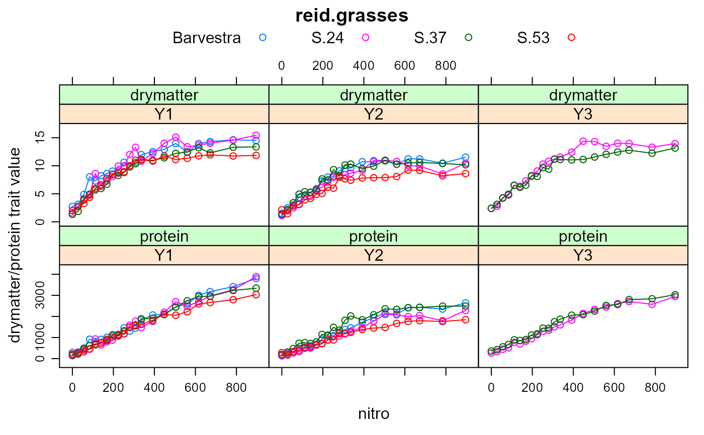
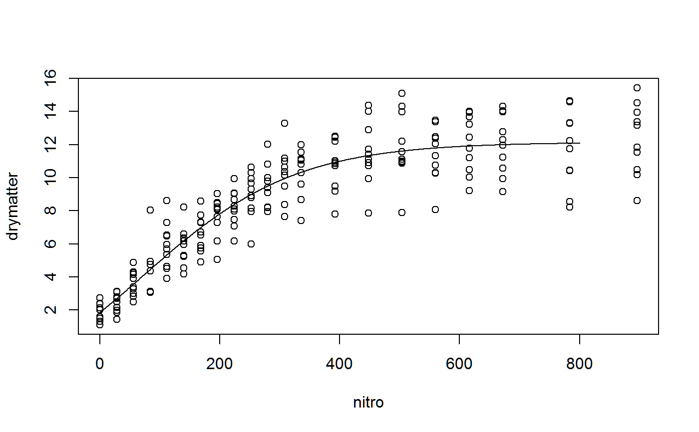
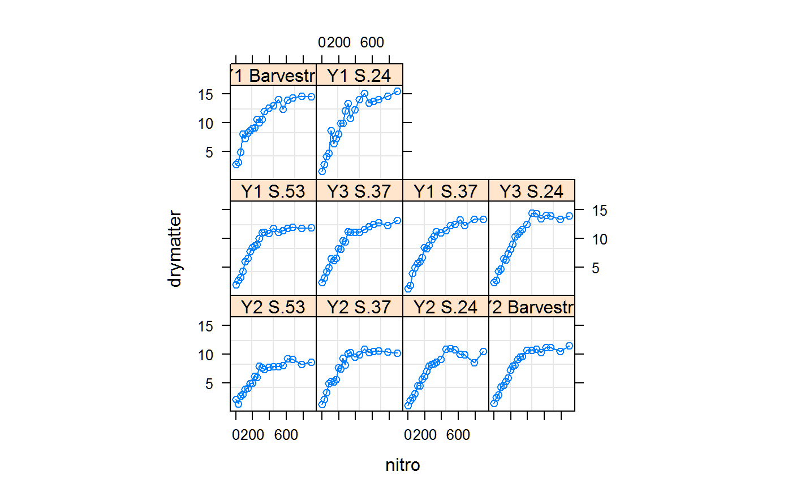

reid.grasses.RdYields of four grasses for a wide range of nitrogen fertilizer, conducted over 3 years.
data("reid.grasses")
A data frame with 210 observations on the following 5 variables.
nitronitrogen, 21 numeric levels
yearY1, Y2, or Y3
gengenotype
drymatterdry matter content
proteinprotein content
Experiment at the Hannah Research Institute, Ayr.
Single plots were planted to 4 different kinds of grasses. Within each plot, 21 nitrogen treatments were randomized.
Reid modeled the dry matter yield with four-parameter logistic curves of the form y = a - b exp(-cx^d).
D. Reid (1985). A comparison of the yield responses of four grasses to a wide range of nitrogen application rates. J. Agric. Sci., 105, 381-387. Table 1 & 3. https://doi.org/10.1017/S0021859600056434
None
library(agridat) data(reid.grasses) dat <- reid.grasses libs(latticeExtra) foo <- xyplot(drymatter + protein ~ nitro|year, dat, group=gen, auto.key=list(columns=4), as.table=TRUE, type=c('p','l'), main="reid.grasses",ylab="drymatter/protein trait value", scales=list(y=list(relation="free"))) combineLimits(foo)libs(nlme) dat2 <- dat dat2$indiv <- paste(dat$year, dat$gen) # individual year+genotype curves # use all data to get initial values inits <- getInitial(drymatter ~ SSfpl(nitro, A, B, xmid, scal), data = dat2) inits#> A B xmid scal #> -4.167902 12.139796 68.764796 128.313106## A B xmid scal ## -4.167902 12.139796 68.764796 128.313106 xvals <- 0:800 y1 <- with(as.list(inits), SSfpl(xvals, A, B, xmid, scal)) plot(drymatter ~ nitro, dat2)# must have groupedData object to use augPred dat2 <- groupedData(drymatter ~ nitro|indiv, data=dat2) plot(dat2)# without 'random', all effects are included in 'random' m1 <- nlme(drymatter ~ SSfpl(nitro, A, B, xmid,scale), data= dat2, fixed= A + B + xmid + scale ~ 1, # random = B ~ 1|indiv, # to make only B random random = A + B + xmid + scale ~ 1|indiv, start=inits)#> Warning: Iteration 1, LME step: nlminb() did not converge (code = 1). Do increase 'msMaxIter'!#> Warning: Iteration 2, LME step: nlminb() did not converge (code = 1). Do increase 'msMaxIter'!#> Warning: Iteration 3, LME step: nlminb() did not converge (code = 1). PORT message: false convergence (8)#> Warning: Iteration 4, LME step: nlminb() did not converge (code = 1). Do increase 'msMaxIter'!#> Warning: Iteration 5, LME step: nlminb() did not converge (code = 1). Do increase 'msMaxIter'!#> Warning: Iteration 8, LME step: nlminb() did not converge (code = 1). PORT message: false convergence (8)#> Warning: Iteration 9, LME step: nlminb() did not converge (code = 1). PORT message: false convergence (8)fixef(m1)#> A B xmid scale #> -4.651036 12.144995 66.331663 125.980816summary(m1)#> Nonlinear mixed-effects model fit by maximum likelihood #> Model: drymatter ~ SSfpl(nitro, A, B, xmid, scale) #> Data: dat2 #> AIC BIC logLik #> 458.6758 508.8824 -214.3379 #> #> Random effects: #> Formula: list(A ~ 1, B ~ 1, xmid ~ 1, scale ~ 1) #> Level: indiv #> Structure: General positive-definite, Log-Cholesky parametrization #> StdDev Corr #> A 2.5780579 A B xmid #> B 1.9281826 -0.944 #> xmid 40.6267422 0.958 -0.810 #> scale 22.0497812 -0.996 0.971 -0.927 #> Residual 0.5855829 #> #> Fixed effects: A + B + xmid + scale ~ 1 #> Value Std.Error DF t-value p-value #> A -4.65104 1.026159 197 -4.532469 0e+00 #> B 12.14499 0.622496 197 19.510164 0e+00 #> xmid 66.33166 16.336177 197 4.060415 1e-04 #> scale 125.98082 8.846947 197 14.240033 0e+00 #> Correlation: #> A B xmid #> B -0.782 #> xmid 0.959 -0.659 #> scale -0.918 0.823 -0.870 #> #> Standardized Within-Group Residuals: #> Min Q1 Med Q3 Max #> -2.81231749 -0.62731278 -0.09808307 0.57749179 4.05242676 #> #> Number of Observations: 210 #> Number of Groups: 10plot(augPred(m1, level=0:1), main="reid.grasses - observed/predicted data") # only works with groupedData object#> Error in eval(object$call$data): object 'dat2' not found